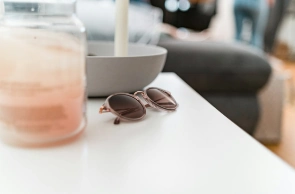

General surgery
- General surgical care
- Trauma surgery
- Emergency surgery

 Hassan HospitalToba Tek Singh
Hassan HospitalToba Tek SinghAt Hassan Hospital in Toba Tek Singh. Call the hospital contacts below to confirm the next available consultation.
Bring your referral if you have one, previous reports and scans, and a list of medicines you take. Write down the questions you want to cover.
Yes. Use the consultation to ask about the proposed procedure, alternatives, recovery, and follow-up care.
Call 0336 7735707 or 0332 7019282 to confirm fees and visiting times before travelling.
Dr. Muhammad Nauman Bashir is a general and laparoscopic surgeon at Hassan Hospital, Toba Tek Singh.
He holds an MBBS and FCPS in Surgery.
His practice includes general, laparoscopic, gastrointestinal, hernia, breast and endocrine surgery.
Yes. Ask Dr. Bashir which approaches are appropriate for your condition.
Hernia and abdominal wall surgery are among the services offered.
Tell the doctor about your work and daily activities so you can discuss recovery and follow-up.
Bring any relevant images along with the written reports.
Contact Hassan Hospital and mention the date of your last visit.

Keep your reports in date order and bring the images that came with them. If another doctor referred you, bring their note so you can discuss the same concern.

What choices do I have? What would recovery look like for my work and daily routine? Who should I contact if I have a question after the operation?